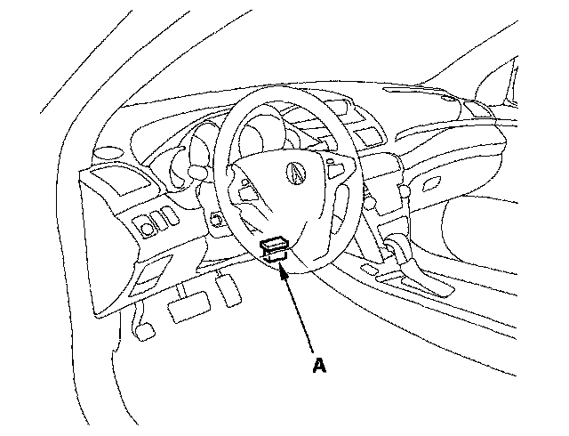

Component Tests and General Diagnostics
Memorizing the Tire Pressure Sensor IDMemorizing a Tire Pressure Sensor ID
When a tire pressure sensor is replaced, the sensor ID must be memorized by the TPMS control unit.
NOTE: To ensure the control unit memorizes the correct ID, the vehicle with the new sensor must be at least 10 ft (3 m) from any other TPMS pressure sensor not installed on that vehicle.
Memorizing a Sensor ID Automatically
After rotating the tires or replacing a tire pressure sensor, drive the vehicle for at least 40 seconds at a speed of 15 mph (24 km/h) or more, and all the sensor IDs will be memorized automatically.
NOTE:
- When replacing the TPMS control unit, use the HDS to memorize IDs.
- After the IDs are memorized, reduce the pressure in all four tires to less than the appropriate specification, and check to see that the four tire indicators come on.
Memorize the ID with the HDS
The HDS can memorize the ID of a new tire pressure sensor or a previously memorized ID.
1. With the ignition switch OFF, connect the HDS to the data link connector (DLC) (A) located under the driver's side of the dashboard.

2. Turn the ignition switch ON (II).
3. Make sure the HDS communicates with the vehicle and the TPMS control unit. If it doesn't, troubleshoot the DLC circuit.
4. Memorize the ID of the tire pressure sensor by following the screen prompts on the HDS.
NOTE:
- See the HDS Help menu for specific instructions.
- When replacing the TPMS control unit, use the HDS to memorize IDs.
- After the IDs are memorized, reduce the pressure in all four tires to less than the appropriate specification, and check to see that the four tire indicators come on.
5. Turn the ignition switch OFF.